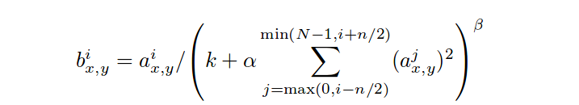

This blog summarizes the work in did during the 8th & 9th weeks of GSoC'18. In case you haven't, do read the earlier blogs here.
Sentiment Analysis using pretrained GloVe embeddings
Keras.jl provides an interface to run pretrained Keras models (either TensorFlow or Theano backend) with a Flux backend. This is done by reading data simultaneously from the weights.h5 model weight file and structure.json model structure file. Every Keras layer, such as Conv, MaxPool, Dropout, BatchNorm just to name a few, are converted into corresponding Flux operators, generally as lambda function. Once we have all layers into a Julian format, the next step remains generating the dataflow graph from these operators. DataFlow.jl is used to generate the graph. One major model that I was able to run with Flux backend was the Sentiment Analysis using pretrained GloVe embeddings.
My initial aim was to load the pretrained model from this GitHub repo. But as it turns out there is
an error in the model itself, so I had to implement it from scratch in Keras. The model used GloVe embeddings
and 1-D Convolution, Dropout, 1-D MaxPool and Dense layers.
- I had to implement 1-D Convolutions using the Flux Conv. Since this operator isn't used generally for
3-D inputs, the trick was to convert every input into 4-D, apply the operation and return the reshaped output.
- Similar problems existed for MaxPool 1-D. Flux doesn't have a separate interface for 1-D operations, although they are used extensively in Natural Language Processing tasks.
- Another major issue that I had been verlooking was Convolutions/Cross correlations. Many people don't
understand the difference between these tensor operations, and use them in place of each other. While
investigating the reason behind wrong Conv output, I realized that the Flux.Conv actually inverts
the weight kernel before performing the Convolution operation, unlike other major frameworks like
TensorFlow. This inversion of weights is actually done by flipping the kernel about a vertical axis and
then about a horizontal axis.
Cross-correlation, on the other hand, is similar to Convolutions, but without flipping the kernel. Now the NNlib does provide an optional mode parameter in its API, but Flux apparently takes mode = 0 by default. I worked on a PR to reflect this parameter in Flux, which is currently W.I.P.
ONNX.jl
ONNX.jl provides functionalities to load and run ONNX models into Flux. Tl;dr this is done by constructing the
dataflow graph from the protobuf-serialized file, and them generating Julia code. I continued loading and testing more
ONNX models. I fixed the Convolution error in ONNX.Conv, and raised a few issues in the BatchNorm-CPU
implementation of the operator, to maintain uniformity in the BatchNorm implementation.
I worked on more operators for the package, adding support for Unsqueeze, Cross-correlation, BatchNorm,
1-D maxpool amongst others. Apaart from this, I also opened issues and PRs in Flux and corresponding API
calls in NNlib:
- Reflecting mode parameter eternally in NNlib.
- Adapting to the parameter changes from Flux.
- Reimplementing BatchNorm using standard definition.
Local Response Normalization:
Commonly known as LRN, Local Response Normalization is a technique, which was introduced in the ImageNet research paper by krizhevsky et al, titled Imagenet Classification with Deep Convolutional Neural Networks. The paper can be found here.
The LRN Normalization technique was found to aid learning of parameters in the model. In general, the tensor
is normalized according to the scheme:

Where aix,y is the activity of a neuron computed by applying kernel i at position ( x,y ) and then applying the ReLU
nonlinearity, the bix,y is the response-normalized activity.
I created a PR for adding LRN support in Flux, which can be found here.
The changes are most probably going to be merged in the next major release of Flux.